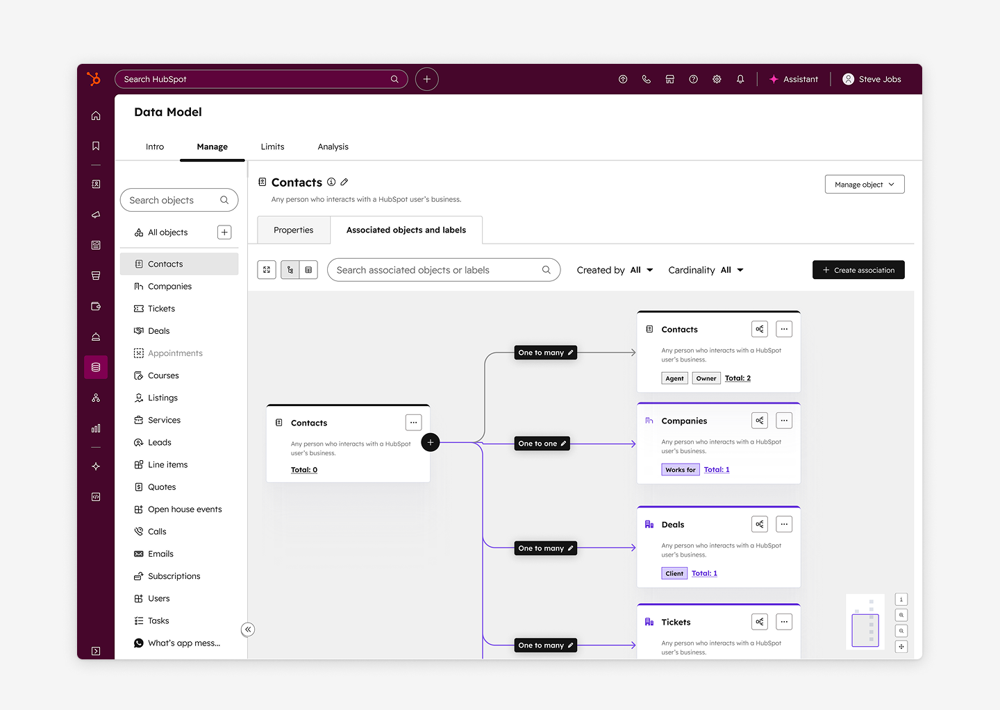
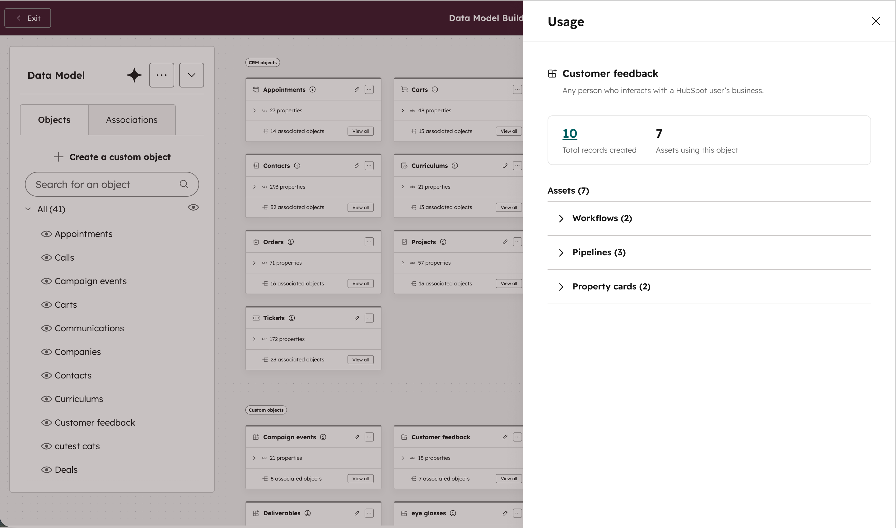
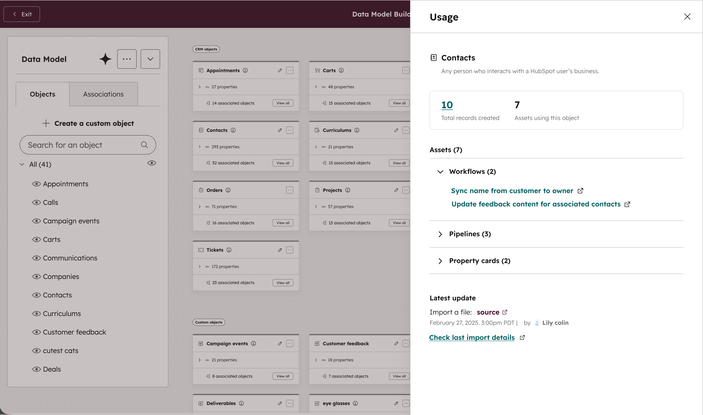
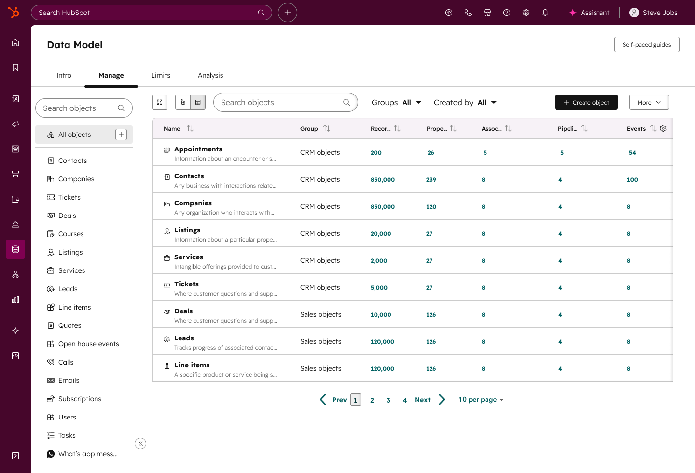
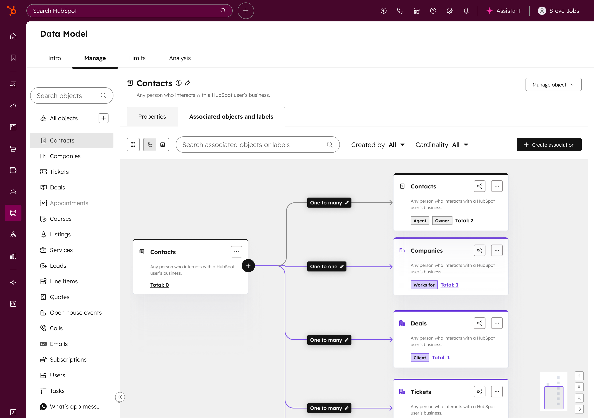

Evolving HubSpot's Data Model
From Static Visualization to an Actionable Builder
The Vision
HubSpot originally provided a visual map of the CRM data model that let users view object types, properties, and associations. While the visualization helped users understand their data, it did not let them manage it.
Customer feedback (CSAT) revealed a major pain point: configuring schema primitives was fragmented and cumbersome, spread across multiple settings pages. This was especially taxing for Enterprise customers with complex setups. My mission was to evolve this static viewer into a comprehensive Data Model Builder, centralizing schema management in a single, intuitive workspace.
Role
Lead Product Designer
Team
1 PM, 4 Engineers, 2 XFN teams
Timeline
1 year

Impact & Recognition
Scale: Weekly usage grew 400%, rising from 10k to 40k active users in three months.
Executive Praise: Received direct positive feedback from the CTO: “It is beautiful.”
Systemic Consistency: Unified disparate UI patterns into a cohesive schema management framework.


The Challenge: Designing for the “Bi-Modal” User
The core design challenge was HubSpot’s bi-modal user strategy. I needed to create a single interface that balanced two opposite archetypes:
- The “Accidental Admin”: A busy generalist who isn’t a data expert and needs a guided, intuitive experience.
- The “Data Pro”: An expert user who requires speed, flexibility, and deep technical control.
Because schema concepts were historically siloed, UI patterns and naming conventions were inconsistent. I saw an opportunity to unify these primitives and create a consistent mental model that reduced the learning curve for all users.
The Pivot: Data-Informed Iteration
After the V1 launch, we saw a massive jump in adoption, but CSAT also surfaced a new friction point: some users found the new builder more complex for their daily tasks.
I led a research initiative that combined deep-dive customer calls with task-frequency analysis. We uncovered a critical nuance: Property management happens far more often than Object or Association configuration. Properties are the “lifeblood” of workflows and reporting, and they require constant tuning.
The Solution: I pivoted the design to prioritize property management workflows within the builder, organizing each primitive under an object type to match users’ mental models (e.g., properties: what information do I want to track for my contact? associations: what relationships do I want to track across contacts? events: what behavior do I want to track with my contacts? pipelines: what pipelines do I need for my deals?). I conducted 7 concept tests with high-frequency users to validate a more “property-centric” navigation. The result was a strong preference for the new layout, which is currently being implemented for a Q2 launch.


